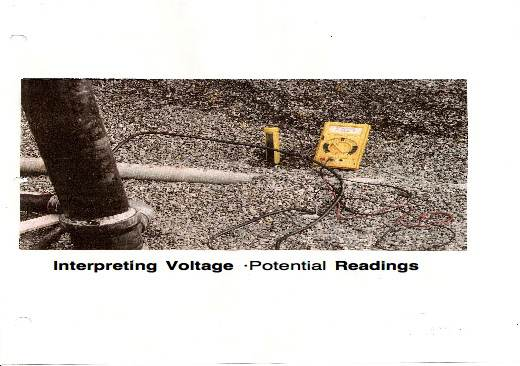

© Copyright 1999-2010 Anode Systems Company
Underground Storage Tank (Gasoline) Cathodic Protection Testing
Interpreting Voltage Potential Readings
124 North 22nd Court Grand Junction, Colorado 81501 (970) 243-4149 or (888) 609-9766 toll-free
The most commonly accepted measure of corrosion protection is the -0.85 volt criterion established by the National Association of Corrosion Engineers (NACE). If a structure's voltage potential is below -0.85 volts, one should assume that it will corrode if exposed to air and water. If the voltage potential is -0.85 volts or greater, one should assume that the structure is protected against corrosion. In rare cases, exceptions to this rule exist but they are beyond the scope of this discussion.

I have measured unprotected readings at many UST sites where galvanic zinc or magnesium anodes are attached to the tanks or pipes. I have also found unprotected tanks and pipes where impressed current rectifier systems were installed. An inspector does not have to figure out why the readings are high or low. All the inspector has to know is weather or not the reading meets the -0.85 volt criterion. If a reading is low, the inspector should note where the reading was taken and what he was connected to when the reading was taken. If a rectifier system is present, he should record the voltage and amperage output of the rectifier.
CP Testers should figure out why a reading is low. The most common reason why galvanic anodes have not shifted the voltage of a tank, a pipe, a flex connector or a swing joint to a protected level is because the majority of these structures are grounded to the electric utilities at the dispensers and submersible pumps inside the tanks. This causes the current from the anodes to collect on any metal object directly or indirectly connected to the tanks or pipes. This includes buried conduit, structural steel near the tanks, copper, lead or cast iron water pipes and electric grounds. Galvanic anodes can not protect all these structures. If the tanks or piping are isolated from the above foreign structures, the anodes could be in dry, non-conductive pea gravel or other backfill that prevents current from flowing to the tank or pipe. A low reading could be caused by an anode being too small for the structure being protected. On occasion, the outer protective plastic bag on an anode has not been removed or it was not connected to the tank or pipe improperly.
A rectifier system will not work if it is off, if the wires to the anodes have been cut, if the anodes are far away from the tanks or pipes, if the rectifier's voltage or current output is too low, if the anodes are defective or if the anodes were installed outside a plastiC lined hole in which the tanks were installed. It is the responsibility of the tank owner to have the cathodic protection system repaired or replaced by a NACE qualified cathodic protection contractor. Many UST c.p. systems have been installed by tank repair or installation contractors who are not experienced or NACE certified in installing cathodic protection systems. In order to correct a defective c.p. system, one has to know everything possible about what was installed and by whom. Electrical continuity tests between the tanks, dispensers and electrical grounds will have to be performed.
The voltage of a steel tank or pipe is the average of the voltages of all the other metal objects connected directly or indirectly to it. For example, an isolated steel tank should have a voltage of about -0.51 volts (see photo). If the steel tank has a voltage of -0.20 volts to -0.40 volts, it is connected to copper water pipes or copper electric grounds by the ground wires from the submersible tanks or dispensers to the electric breaker box. If a STIP tank potential is below -0.85 volts, either the anode has been consumed, or the tank has been grounded to other structures by accident or on purpose, or
the anodes are in very dry backfill. If the anodes are made of zinc, they could be coated with resistive zinc carbonate, a byproduct of the cathodic protection reaction of zinc in carbonate rich groundwater. A low reading on a STIP tank can also be caused by cathodic interference from a rectifier system installed to protect nearby bare steel tanks. This can be checked by taking the STIP tank readings with the rectifier off. If the STIP tank has been connected to the other tanks with a bond wire, the readings will be about 0.51 volts or the voltage of the other tanks. Featured below is a copy of the Practical Galvanic Series which shows the typical voltage of metals used in industry referenced to a copper sulfate electrode.